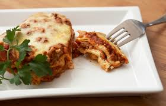

Lasanga recipe

Description
Packed with a winning combination of mushrooms, ricotta and spinach, this light lasagne makes a welcome change from the more usual tomato and white sauce renditions, with the added benefit of being much quicker to make.
Ingridients
- 2 bunches spinach
- 2 tablespoons extra virgin olive oil, plus extra for greasing
- 2 cloves garlic, crushed
- 400g portobello mushrooms, wiped clean and finely chopped
- 1 tablespoon finely chopped oregano
- 2 cups (400 g) firm, fresh low-fat ricotta
- 2 eggs, lightly beaten
- ½ teaspoon ground nutmeg
- 200g fresh instant lasagne sheets, cut
Steps
- Wash the spinach and remove the leaves from the stems. Finely chop the leaves and set aside.
- Heat the oil in a large heavy-based saucepan over medium heat. Add the garlic and mushrooms and cook, stirring, for 5 minutes or until the mushrooms have softened, then add the spinach. Cover and cook for 3–4 minutes or until the spinach has wilted.
- Drain the vegetable mixture over a saucepan, pressing down to remove as much liquid as possible, then transfer the vegetables to a bowl. Boil the liquid for 3–4 minutes or until very reduced, then add to the vegetables and leave to cool slightly. Add the oregano, ricotta, egg and nutmeg, then season to taste with freshly ground black pepper and stir to roughly combine.
- Preheat the oven to 180°C (160°C fan-forced). Lightly brush the base and sides of a 28 cm × 18 cm baking dish with oil.
- Lay enough lasagne strips over the base of the dish to cover, cutting and patching as necessary.
- Spread one-third of the ricotta mixture over the pasta, then top with another layer of pasta. Repeat the process, ending with a layer of the ricotta mixture, then cover with foil. Bake for 20 minutes, then remove the foil and bake for another 20–25 minutes or until the top is light golden and the lasagne is firm. Cool slightly, then serve with rocket leaves to the side.
Home